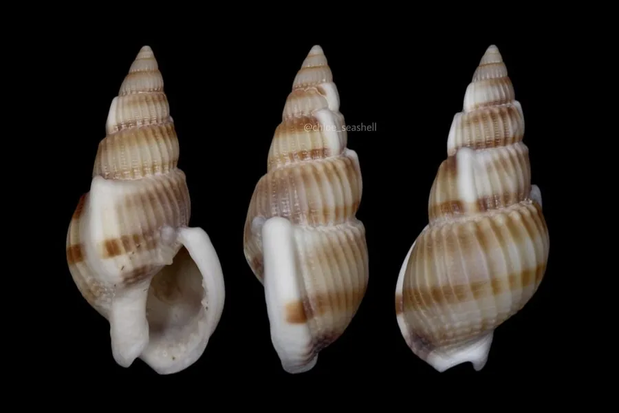

软体动物 · 动物界
纵肋织纹螺 Nassarius variciferus

壳面有纵向粗肋和横纹交织的小型螺，常在潮间带泥滩上成群爬行，以腐肉为食，是滩涂上的清道夫。
- 分类
- 门软体动物门纲腹足纲目新腹足目科织纹螺科属织纹螺属
- 栖息环境
- 潮间带至水深数十米的泥质和沙泥质滩涂
- 地理分布
- 西北太平洋沿岸，包括中国南北沿海、日本和朝鲜半岛
- 保护级别
- 尚无保护级别；部分近缘种富集河豚毒素，采食需谨慎
物种志
纵肋织纹螺的贝壳呈卵圆形或纺锤形，壳高约两厘米，壳质坚实，壳面灰白至黄褐色，具明显的纵肋和细密的螺旋纹，两者交织成网格状，体螺层上常有褐色斑块，壳口卵圆形，外唇内侧有齿状突起，前沟短。足部宽大，前端有短而粗的触角，眼睛位于触角基部。它靠嗅觉寻找食物，是滩涂上常见的腐食性螺类。
它分布于西北太平洋沿岸，包括中国南北沿海、日本和朝鲜半岛，栖息在潮间带至水深数十米的泥质和沙泥质滩涂，常成群出现，密度很高。它以动物尸体、腐肉和有机碎屑为食，遇到食物会从几米外迅速聚集，是潮间带重要的清道夫。繁殖期在夏季，雌体把卵鞘粘在泥沙表面。它个体小、肉少，通常不作为食用对象，但常被用作鱼虾饲料和钓饵。需要注意的是，织纹螺类中部分种类富集河豚毒素，采食时应加以区分，目前尚无保护级别。
形态与习性
- 食性以动物尸体、腐肉和有机碎屑为食
- 壳高约两厘米，壳面具纵肋与螺旋纹
- 习性靠嗅觉寻食，可成群迅速聚集
- 栖息环境潮间带至水深数十米的泥质滩涂
- 繁殖夏季产卵，卵鞘粘附于泥沙表面
- 用途常作鱼虾饲料和钓饵，一般不食用
趣味知识
- 它的壳面纵肋与横纹交织成网格，像粗糙的织物，织纹螺之名由此而来。
- 闻到腐肉气味时，它能从几米外成群赶来，几分钟内聚成一堆。
- 织纹螺类中有些种类会富集河豚毒素，沿海采食时务必分清种类。